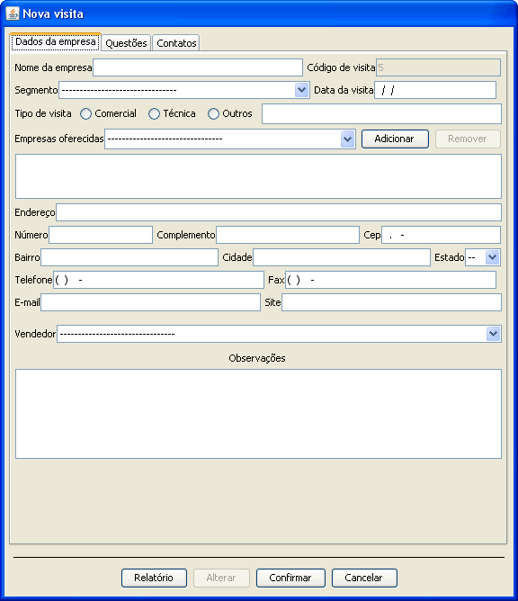
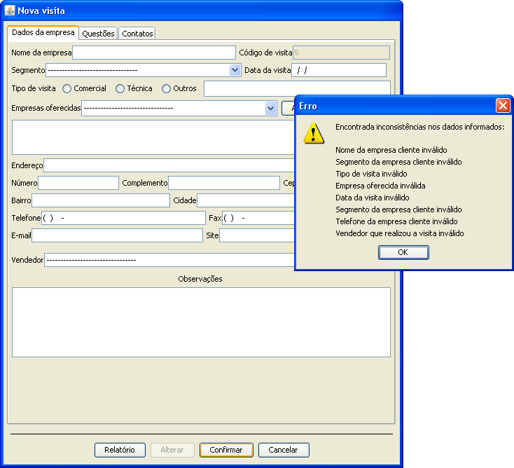
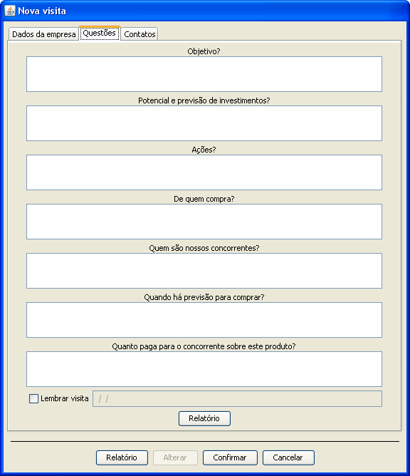
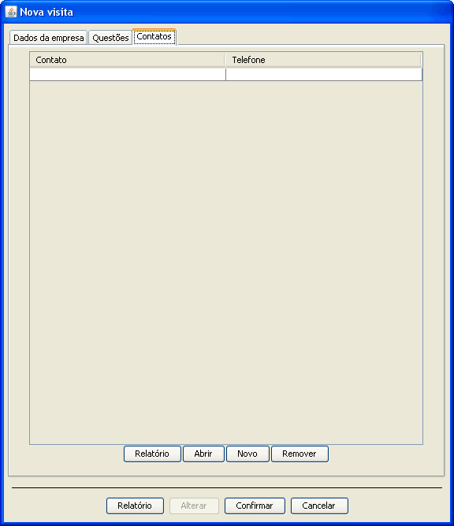
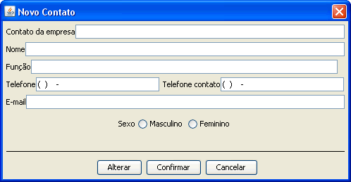

O cadastro de empresa visitada inicia-se com a inserção de dados da empresa visitada.


O cadastro de empresa visitada possui alguns dados essênciais a falta de algum deles impedirá o cadastro da empresa visitada.

Na guia questões tem a opção de cadastrar respostas para questões relevantes a visita permitindo se ter um controle sobre a empresa visitada. Nesta guia questões logo à baixo das questões tem um campo onde se pode cadastrar uma data para que o sistema notifique o usuário para lembrar da visita realizada.


Na última guia se tem o cadastro de contatos da empresa visitada permitindo cadastrar quantos contatos possuir.